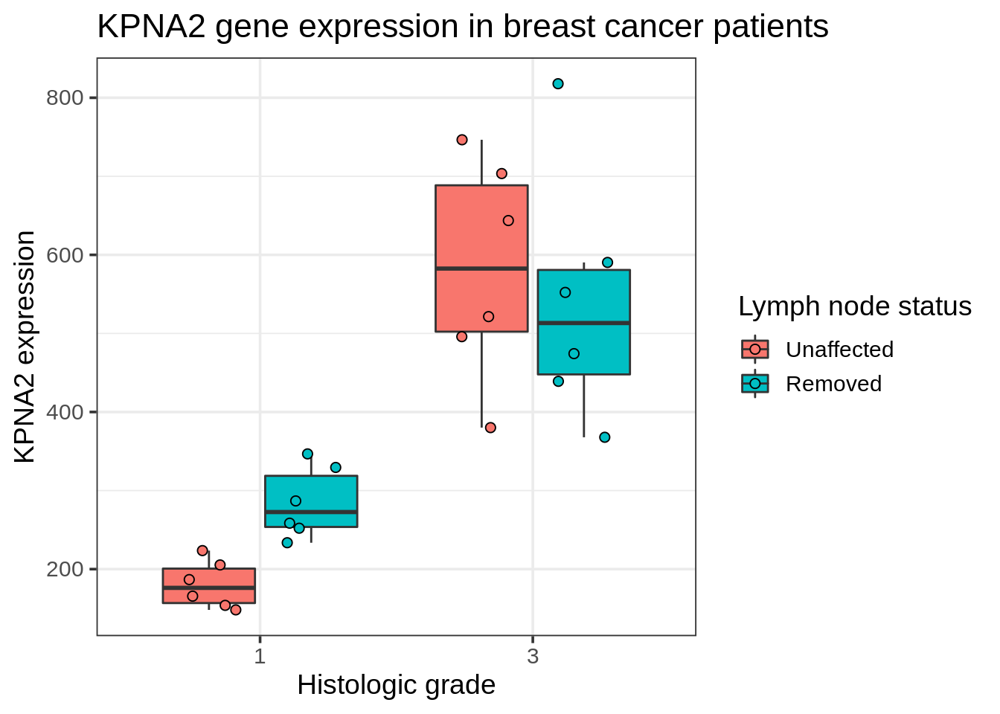
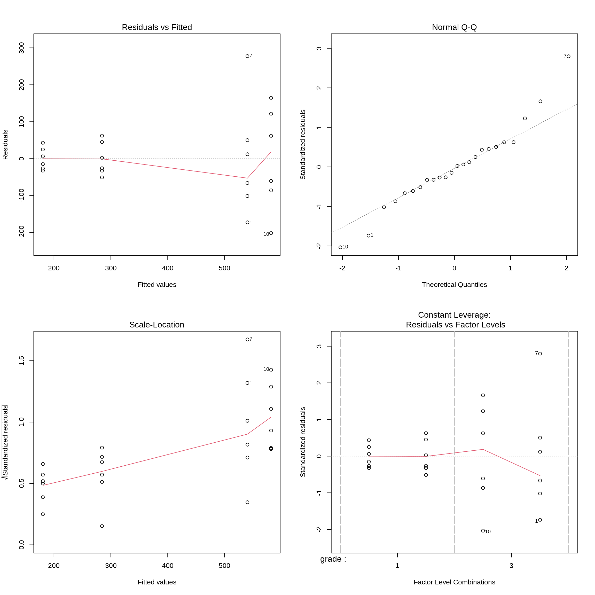
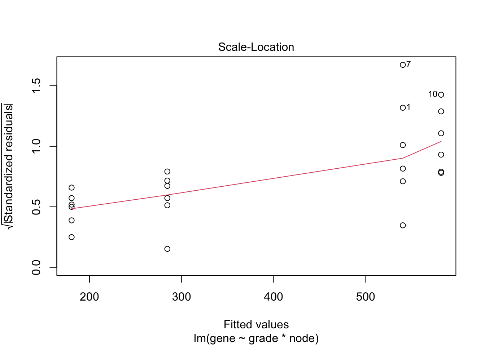
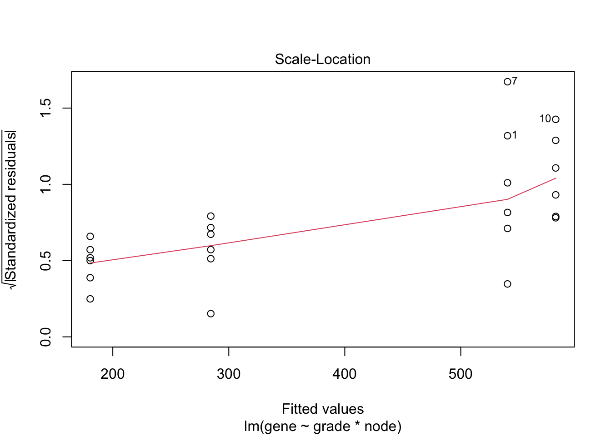
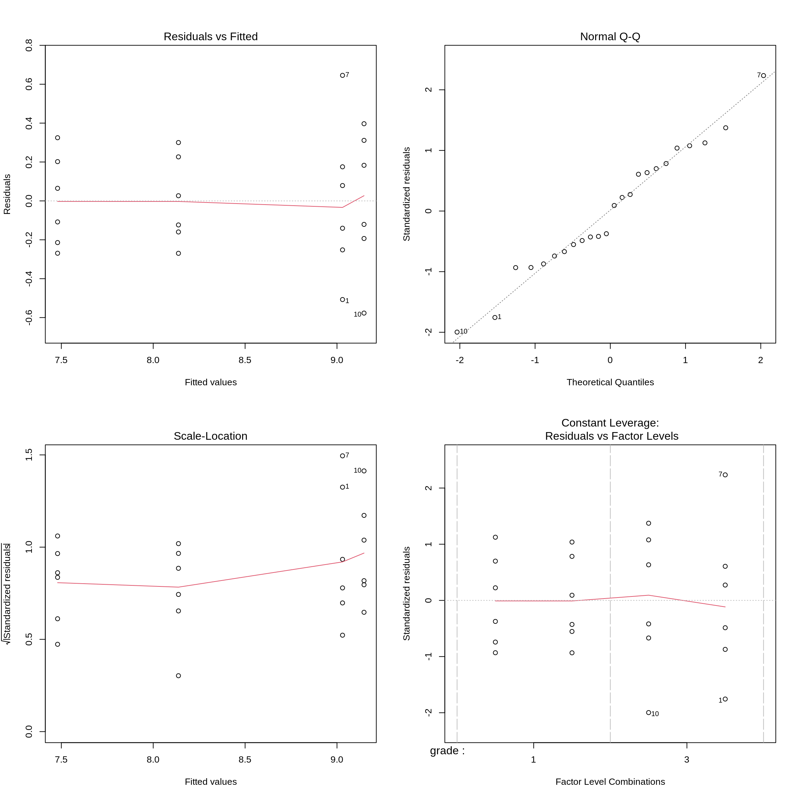
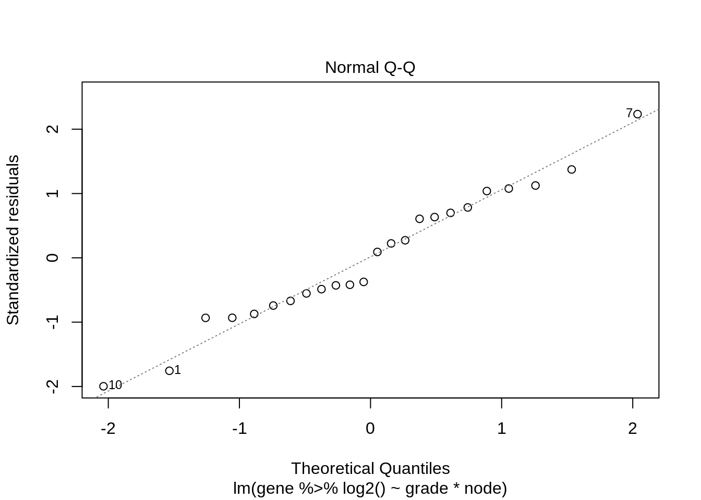
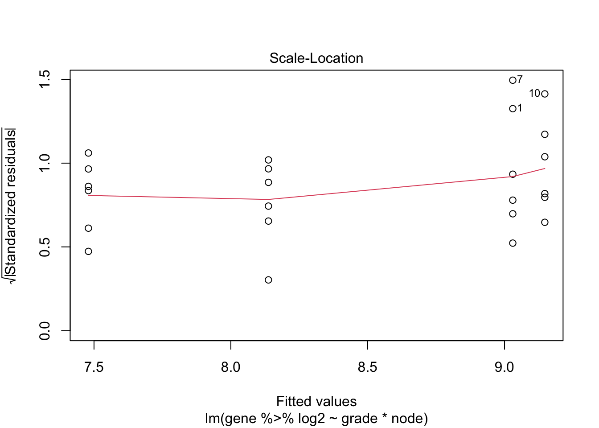
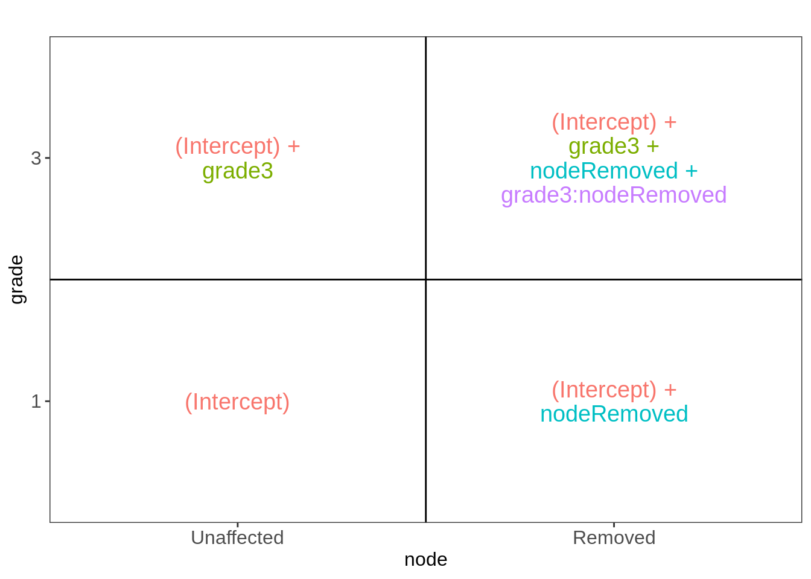

Background
Histologic grade in breast cancer provides clinically important prognostic information. Researchers examined whether histologic grade was associated with gene expression profiles of breast cancers and whether such profiles could be used to improve histologic grading. In this tutorial we will assess the association between histologic grade and the expression of the KPNA2 gene that is known to be associated with poor BC prognosis. The patients, however, do not only differ in the histologic grade, but also on their lymph node status. The lymph nodes were not affected (0) or surgically removed (1).
Load libraries
Data analysis
Import KPNA2 data in R
kpna2 <- read.table("https://raw.githubusercontent.com/statOmics/SGA21/master/data/kpna2.txt", header = TRUE)
kpna2
Data exploration
Histologic grade and lymph node status can be associated with the kpna2 gene expression. Moreover, it is also possible that the differential expression associated with histological grade is different in patients that have unaffected lymph nodes and patients for which the lymph nodes had to be removed.
kpna2 %>%
ggplot(aes(x = node:grade, y = gene, fill = node:grade)) +
geom_boxplot(outlier.shape = NA) +
geom_jitter()

The plot suggests
- An effect of the histological grade
- An effect of node status
- The differential expression associated to grade seems to differ according to the lymph node status (interaction)
- Mean variance relation?
Model
Histologic grade and lymph node status can be associated with the kpna2 gene expression. Moreover, it is also possible that the differential expression associated with histological grade is different in patients that have unaffected lymph nodes and patients for which the lymph nodes had to be removed. Hence, we will have to model the gene expression by using main effects for grade, node and a grade x node interaction.
# Model with main effects for histological grade and node and grade x node interaction
fit <- lm(gene ~ grade * node, data = kpna2)
plot(fit)
 

The variance seems to increase with the mean. The QQ-plot of the residuals shows deviations from normality or some outliers.
We will first log transform the data.
fit <- lm(gene %>% log2() ~ grade * node, data = kpna2)
plot(fit)

- The variance is now more or less equal for every treatment x node combination.
- The QQ-plot of the residuals shows no deviations from normality.
library(car)
Anova(fit, type = "III")
The output shows that there is a very significant interaction (\(p=\) 0.0071). Hence, the association of the histological grade on the gene expression differs according to the lymph node status and vice versa.
The researchers are therefore interested in studying and reporting on the following hypotheses:
Is the KPNA2 expression on average different between grade 3 and grade 1 tumors from patients with unaffected lymph nodes (by testing \(H_0: \log_2{FC}_{g3n0-g1n0}=0\text{ vs }H1: \log_2{FC}_{g3n0-g1n0}\neq 0\))
Is the KPNA2 expression on average different between grade 3 and grade 1 tumors from patients with affected lymph nodes (by testing \(H_0: \log_2{FC}_{g3n1-g1n1}=0\text{ vs }H1: \log_2{FC}_{g3n1-g1n1}\neq 0\))
Is the KPNA2 expression on average different in grade 1 tumors of patients with affected and patients with unaffected lymph nodes (by testing \(H_0: \log_2{FC}_{g1n1-g1n0}=0\text{ vs }H1: \log_2{FC}_{g1n1-g1n0}\neq 0\))
Is the KPNA2 expression on average different in grade 3 tumors of patients with affected and patients with unaffected lymph nodes (by testing \(H_0: \log_2{FC}_{g3n1-g3n0}=0\text{ vs }H1: \log_2{FC}_{g3n1-g3n0}\neq 0\))
Is the fold change of the KPNA2 gene between grade 3 and grade 1 different according to the lymph node status and vice versa (tested already by assessing the interaction: \(H_0: \log_2{FC}_{g3n0-g1n0}=\log_2{FC}_{g3n1-g1n1} \text{ vs }H1:\log_2{FC}_{g3n0-g1n0}\neq\log_2{FC}_{g3n1-g1n1}\)).
Interpretation of model parameters and statistical tests
ExploreModelMatrix::VisualizeDesign(kpna2, ~ grade * node)$plotlist
[[1]]

Call:
lm(formula = gene %>% log2() ~ grade * node, data = kpna2)
Residuals:
Min 1Q Median 3Q Max
-0.57694 -0.19857 -0.04079 0.20807 0.64557
Coefficients:
Estimate Std. Error t value Pr(>|t|)
(Intercept) 7.4796 0.1292 57.893 < 2e-16 ***
grade3 1.6675 0.1827 9.127 1.44e-08 ***
node1 0.6577 0.1827 3.600 0.00179 **
grade3:node1 -0.7748 0.2584 -2.998 0.00710 **
---
Signif. codes: 0 '***' 0.001 '**' 0.01 '*' 0.05 '.' 0.1 ' ' 1
Residual standard error: 0.3165 on 20 degrees of freedom
Multiple R-squared: 0.848, Adjusted R-squared: 0.8252
F-statistic: 37.18 on 3 and 20 DF, p-value: 2.266e-08
# Calculate confidence intervals for parameters of model
CIfit <- confint(fit)
# log_2 FC between g3n0-g1n0, g1n1-g1n0
# and log_2 difference in FC g3n1-g1n1 and FC g3n0-g1n0
CIfit
2.5 % 97.5 %
(Intercept) 7.2101125 7.7491128
grade3 1.2864076 2.0486691
node1 0.2766005 1.0388620
grade3:node1 -1.3137511 -0.2357505
# Transform parameters and the CI back to the original scale
2^fit$coef
(Intercept) grade3 node1 grade3:node1
178.4792627 3.1767209 1.5775997 0.5844896
2.5 % 97.5 %
(Intercept) 148.0676336 215.1371400
grade3 2.4391992 4.1372414
node1 1.2113372 2.0546063
grade3:node1 0.4022736 0.8492431
2^-fit$coef["grade3:node1"]
grade3:node1
1.710895
2^-CIfit["grade3:node1", ]
2.5 % 97.5 %
2.485870 1.177519
We model the log\(_2\)-transformed intensities with the following model: \[
y=\beta_0+\beta_{g3}x_{g3}+\beta_{n1}x_{n1}+\beta_{g3n1}x_{g3}x_{n1},
\]
with \(\beta_0\) the intercept, \(\beta_{g3}\) the main effect for grade, \(x_{g3}\) a dummy variable for grade which is 0 for the control treatment in the absence of grade and 1 for the treatment with grade, \(\beta_{n1}\) the main effect for node, \(x_{n1}\) a dummy variable that is 0 for the measurements of patients with unaffected lymph nodes and 1 for patients for which the lymph nodes were removed and \(\beta_{g3n1}\) the interaction effect between grade and node. To ease the interpretation of the parameters, \(\log_2\) transformed geometric mean intensities are given for each treatment group as well as corresponding contrasts between treatments, which have an interpretation in terms of \(\log_2\) transformed fold changes (FC).
\(\log_2\hat{\mu}_{g1n0}=\hat\beta_0\), \(\log_2 \hat{\mu}_{g3n0}=\hat\beta_0+\hat\beta_{g3}\) –> \(\log_2 \widehat{FC}_{g3n0-g1n0}=\hat\beta_{g3}\)
\(\log_2 \hat{\mu}_{g1n1}=\hat\beta_0+\hat\beta_{n1}\), \(\log_2 \hat {\mu}_{g3n1}=\hat\beta_0+\hat\beta_{g3}+\hat\beta_{n1}+\hat\beta_{g3n1}\) –> \(\log_2 \widehat{FC}_{g3n1-g1n1}=\hat \beta_{g3} +\hat\beta_{g3n1}\)
Similarly, \(\log_2 \widehat{FC}_{g1n1-g1n0}=\hat\beta_{n1}\), \(\log_2 \widehat{FC}_{g3n1-g3n0}=\hat\beta_{n1}+\hat\beta_{g3n1}\)
\(\log_2\frac{\widehat{FC}_{g3n1-g1n1}}{\widehat{FC}_{g3n0-g1n0}}=\log_2\frac{\widehat{FC}_{g3n1-g3n0}}{\widehat{FC}_{g1n1-g1n0}}=\hat\beta_{g3n1}\)
with \(\log_2\hat{\mu}_{g1n0}\), \(\log_2\hat{\mu}_{g3n0}\), \(\log_2\hat {\mu}_{g1n1}\) and \(\log_2\hat{\mu}_{g3n1}\) the estimated mean \(\log_2\) transformed intensity for patients with grade 1 and node 0 status, grade 3 and node 0 status, grade 1 and node 1 status and grade 3 and node 1 status, respectively. With \(\log_2 \widehat{FC}_{b-a}\) we indicate \(\log_2\) transformed fold change estimates between treatment b and treatment a, i.e. \(\log_2 \widehat{FC}_{b-a}=\log_2 \hat{\mu}_{b}-\log_2 \hat{\mu}_a=\log_2 \frac{\hat{\mu}_{b}}{\hat{\mu}_{a}}\).
The model immediately provides statistical tests for assessing the significance of fold changes between grade 3 and grade 1 for patients with unaffected lymph nodes (n=0) \(\log_2 {FC}_{g3n0-g1n0}\), fold changes between the grade 1-node 1 patients and grade 1- node 0 patients \(\log_2 {FC}_{g1n1-g3n0}\) and for differences in fold change related to histological grade for node 1 patients and node 0 patients. \(\log_2\frac{{FC}_{g3n1-g1n1}}{{FC}_{g3n0-g1n0}}\), the interaction term.
Interpretation of the model parameters in the model output:
- The geometric mean intensity for grade 1 patients with unaffected lymph nodes equals \(\exp(\hat \beta_0)\)= 178.48.
- When lymph nodes are unaffected, the expression is on average 3.18 times higher for patients with histological grade 3 than patients with histological grade 1.
- The gene expression in histological grade 1 patients with affected lymph nodes is on average 1.58 times higher than for grade 1 patients with unaffected lymph nodes.
- The fold change corresponding to histological grade is on average 1.71 times lower in patients with affected lymph nodes as compared to patients with unaffected lymph node.
For the remaining hypothesis of interest we will have to define contrasts: linear combinations of the model parameters and evaluate the contrasts with the multcomp package.
The F-test showed an extremely significant association of the node status, hystological grade and/or the interaction between the node status and the grade (p<<0.001).
Assessing the significance of all hypothesis of interest
We can assess all contrasts of interest using the multcomp package. This will also allow us to correct for multiple testing, since we assess multiple hypotheses to answer the relevant research question.
- \(H_0: \log_2{FC}_{g3n0-g1n0}= \beta_{g3}=0\) \(\rightarrow\) “grade3 = 0”
- \(H_0: \log_2{FC}_{g3n1-g1n1}= \beta_{g3} + \hat\beta_{g3n1}=0\) \(\rightarrow\) “grade3+grade3:node1 = 0”
- \(H_0: \log_2{FC}_{g1n1-g1n0}= \beta_{n1}\) \(\rightarrow\) “node1 = 0”
- \(H_0: \log_2{FC}_{g3n1-g3n0}= \beta_{n1} + \hat\beta_{g3n1}=0\) \(\rightarrow\) “node1+grade3:node1 = 0”
- \(H_0: \log_2{FC}_{g3n1-g1n1} - \log_2{FC}_{g3n0-g1n0} = \hat\beta_{g3n1}=0\), note that the latter hypothesis is also equivalent to \(H_0: \log_2{FC}_{g3n1-g3n0} - \log_2{FC}_{g1n1-g1n0} = \hat\beta_{g3n1}=0\) \(\rightarrow\) “grade3:node1 = 0”
library(multcomp)
fitGlht <- glht(fit, linfct = c("grade3 = 0", "grade3+grade3:node1 = 0", "node1 = 0", "node1+grade3:node1 = 0", "grade3:node1 = 0"))
summary(fitGlht)
Simultaneous Tests for General Linear Hypotheses
Fit: lm(formula = gene %>% log2() ~ grade * node, data = kpna2)
Linear Hypotheses:
Estimate Std. Error t value Pr(>|t|)
grade3 == 0 1.6675 0.1827 9.127 < 0.001 ***
grade3 + grade3:node1 == 0 0.8928 0.1827 4.886 < 0.001 ***
node1 == 0 0.6577 0.1827 3.600 0.00731 **
node1 + grade3:node1 == 0 -0.1170 0.1827 -0.640 0.89806
grade3:node1 == 0 -0.7748 0.2584 -2.998 0.02676 *
---
Signif. codes: 0 '***' 0.001 '**' 0.01 '*' 0.05 '.' 0.1 ' ' 1
(Adjusted p values reported -- single-step method)
Simultaneous Confidence Intervals
Fit: lm(formula = gene %>% log2() ~ grade * node, data = kpna2)
Quantile = 2.6987
95% family-wise confidence level
Linear Hypotheses:
Estimate lwr upr
grade3 == 0 1.66754 1.17445 2.16063
grade3 + grade3:node1 == 0 0.89279 0.39970 1.38588
node1 == 0 0.65773 0.16464 1.15082
node1 + grade3:node1 == 0 -0.11702 -0.61011 0.37607
grade3:node1 == 0 -0.77475 -1.47208 -0.07742
2^confint(fitGlht)$confint
Estimate lwr upr
grade3 3.1767209 2.2575577 4.4701210
grade3 + grade3:node1 1.8567602 1.3195189 2.6127391
node1 1.5775997 1.1211317 2.2199186
node1 + grade3:node1 0.9220906 0.6552898 1.2975192
grade3:node1 0.5844896 0.3605720 0.9474614
attr(,"conf.level")
[1] 0.95
attr(,"calpha")
[1] 2.697005
2^-confint(fitGlht)$confint["grade3:node1", ]
Estimate lwr upr
1.710895 2.774343 1.055082
Conclusion
There is an extremely significant association between the KPNA2 expression and hystological grade in patients with unaffected as well as in patients with affected lymph nodes (both p<<0.001). When lymph nodes are unaffected, the expression is on average 3.18 times higher for patients with histological grade 3 than patients with histological grade 1 (95% CI [2.26, 4.47]). For patients with affected lymph nodes the expression is on average 1.86 times higher for patients with histological grade 3 tumors than patients with histological grade 1 tumors (95% CI [1.32, 2.61]).
The association between the KPNA2 expression with the lymph node status in grade 1 patients is very significant (\(p=\) 0.0071). The KPNA2 expression in histological grade 1 patients with affected lymph nodes is on average 1.58 times higher than for grade 1 patients with unaffected lymph nodes (95% CI [1.12, 2.22]). In grade 3 patients, however, this association is not significant (\(p=\) 0.9, 95% CI [0.66, 1.3] ).
There is also a significant interaction between the hystological grade and the lymph node status. So the association between the KPNA2 expression and the histological grade depends on the lymph node status and vice versa (\(p=\) 0.027). The fold change corresponding to histological grade is on average 1.71 times lower in patients with affected lymph nodes as compared to patients with unaffected lymph node (95% CI [1.06, 2.77]). (Similarly, the fold change corresponding to the node status is on average 1.71 times lower in patients with grade 3 tumors as compared to patients with grade 1 tumors, 95% CI [1.06, 2.77])
LS0tCnRpdGxlOiAiOC40LiBNdWx0aXBsZSBSZWdyZXNzaW9uOiBLUE5BMiBleGFtcGxlIC0gc29sdXRpb24iCmF1dGhvcjogIkxpZXZlbiBDbGVtZW50IgpkYXRlOiAic3RhdE9taWNzLCBHaGVudCBVbml2ZXJzaXR5IChodHRwczovL3N0YXRvbWljcy5naXRodWIuaW8pIgotLS0KCjxhIHJlbD0ibGljZW5zZSIgaHJlZj0iaHR0cHM6Ly9jcmVhdGl2ZWNvbW1vbnMub3JnL2xpY2Vuc2VzL2J5LW5jLXNhLzQuMCI+PGltZyBhbHQ9IkNyZWF0aXZlIENvbW1vbnMgTGljZW5zZSIgc3R5bGU9ImJvcmRlci13aWR0aDowIiBzcmM9Imh0dHBzOi8vaS5jcmVhdGl2ZWNvbW1vbnMub3JnL2wvYnktbmMtc2EvNC4wLzg4eDMxLnBuZyIgLz48L2E+CgoKYGBge3Igc2V0dXAsIGluY2x1ZGU9RkFMU0V9CmtuaXRyOjpvcHRzX2NodW5rJHNldCgKICBpbmNsdWRlID0gVFJVRSwgY29tbWVudCA9IE5BLCBlY2hvID0gVFJVRSwKICBtZXNzYWdlID0gRkFMU0UsIHdhcm5pbmcgPSBGQUxTRSwgY2FjaGUgPSBUUlVFCikKYGBgCgojIEJhY2tncm91bmQKCkhpc3RvbG9naWMgZ3JhZGUgaW4gYnJlYXN0IGNhbmNlciBwcm92aWRlcyBjbGluaWNhbGx5IGltcG9ydGFudCBwcm9nbm9zdGljIGluZm9ybWF0aW9uLiBSZXNlYXJjaGVycyBleGFtaW5lZCB3aGV0aGVyIGhpc3RvbG9naWMgZ3JhZGUgd2FzIGFzc29jaWF0ZWQgd2l0aCBnZW5lIGV4cHJlc3Npb24gcHJvZmlsZXMgb2YgYnJlYXN0IGNhbmNlcnMgYW5kIHdoZXRoZXIgc3VjaCBwcm9maWxlcyBjb3VsZCBiZSB1c2VkIHRvIGltcHJvdmUgaGlzdG9sb2dpYyBncmFkaW5nLiBJbiB0aGlzIHR1dG9yaWFsIHdlIHdpbGwgYXNzZXNzIHRoZSBhc3NvY2lhdGlvbiBiZXR3ZWVuIGhpc3RvbG9naWMgZ3JhZGUgYW5kIHRoZSBleHByZXNzaW9uIG9mIHRoZSBLUE5BMiBnZW5lIHRoYXQgaXMga25vd24gdG8gYmUgYXNzb2NpYXRlZCB3aXRoIHBvb3IgQkMgcHJvZ25vc2lzLgpUaGUgcGF0aWVudHMsIGhvd2V2ZXIsIGRvIG5vdCBvbmx5IGRpZmZlciBpbiB0aGUgaGlzdG9sb2dpYyBncmFkZSwgYnV0IGFsc28gb24gdGhlaXIgbHltcGggbm9kZSBzdGF0dXMuClRoZSBseW1waCBub2RlcyB3ZXJlIG5vdCBhZmZlY3RlZCAoMCkgb3Igc3VyZ2ljYWxseSByZW1vdmVkICgxKS4KCkxvYWQgbGlicmFyaWVzCgpgYGB7cn0KbGlicmFyeSh0aWR5dmVyc2UpCmBgYAoKIyBEYXRhIGFuYWx5c2lzCiMjIEltcG9ydCBLUE5BMiBkYXRhIGluIFIKYGBge3J9CmtwbmEyIDwtIHJlYWQudGFibGUoImh0dHBzOi8vcmF3LmdpdGh1YnVzZXJjb250ZW50LmNvbS9zdGF0T21pY3MvU0dBMjEvbWFzdGVyL2RhdGEva3BuYTIudHh0IiwgaGVhZGVyID0gVFJVRSkKa3BuYTIKYGBgCgojIyBUcmFuc2Zvcm0gdGhlIHZhcmlhYmxlIGdyYWRlIGFuZCBub2RlIHRvIGEgZmFjdG9yCmBgYHtyfQprcG5hMiRncmFkZSA8LSBhcy5mYWN0b3Ioa3BuYTIkZ3JhZGUpCmtwbmEyJG5vZGUgPC0gYXMuZmFjdG9yKGtwbmEyJG5vZGUpCmBgYAoKIyMgRGF0YSBleHBsb3JhdGlvbgpIaXN0b2xvZ2ljIGdyYWRlIGFuZCBseW1waCBub2RlIHN0YXR1cyBjYW4gYmUgYXNzb2NpYXRlZCB3aXRoIHRoZSBrcG5hMiBnZW5lIGV4cHJlc3Npb24uIE1vcmVvdmVyLCBpdCBpcyBhbHNvIHBvc3NpYmxlIHRoYXQgdGhlIGRpZmZlcmVudGlhbCBleHByZXNzaW9uIGFzc29jaWF0ZWQgd2l0aCBoaXN0b2xvZ2ljYWwgZ3JhZGUgaXMgZGlmZmVyZW50IGluIHBhdGllbnRzIHRoYXQgaGF2ZSB1bmFmZmVjdGVkIGx5bXBoIG5vZGVzIGFuZCBwYXRpZW50cyBmb3Igd2hpY2ggdGhlIGx5bXBoIG5vZGVzIGhhZCB0byBiZSByZW1vdmVkLgoKYGBge3J9CmtwbmEyICU+JQogIGdncGxvdChhZXMoeCA9IG5vZGU6Z3JhZGUsIHkgPSBnZW5lLCBmaWxsID0gbm9kZTpncmFkZSkpICsKICBnZW9tX2JveHBsb3Qob3V0bGllci5zaGFwZSA9IE5BKSArCiAgZ2VvbV9qaXR0ZXIoKQpgYGAKClRoZSBwbG90IHN1Z2dlc3RzCgotIEFuIGVmZmVjdCBvZiB0aGUgaGlzdG9sb2dpY2FsIGdyYWRlCi0gQW4gZWZmZWN0IG9mIG5vZGUgc3RhdHVzCi0gVGhlIGRpZmZlcmVudGlhbCBleHByZXNzaW9uIGFzc29jaWF0ZWQgdG8gZ3JhZGUgc2VlbXMgdG8gZGlmZmVyIGFjY29yZGluZyB0byB0aGUgbHltcGggbm9kZSBzdGF0dXMgKGludGVyYWN0aW9uKQotIE1lYW4gdmFyaWFuY2UgcmVsYXRpb24/CgojIyBNb2RlbAoKSGlzdG9sb2dpYyBncmFkZSBhbmQgbHltcGggbm9kZSBzdGF0dXMgY2FuIGJlIGFzc29jaWF0ZWQgd2l0aCB0aGUga3BuYTIgZ2VuZSBleHByZXNzaW9uLiBNb3Jlb3ZlciwgaXQgaXMgYWxzbyBwb3NzaWJsZSB0aGF0IHRoZSBkaWZmZXJlbnRpYWwgZXhwcmVzc2lvbiBhc3NvY2lhdGVkIHdpdGggaGlzdG9sb2dpY2FsIGdyYWRlIGlzIGRpZmZlcmVudCBpbiBwYXRpZW50cyB0aGF0IGhhdmUgdW5hZmZlY3RlZCBseW1waCBub2RlcyBhbmQgcGF0aWVudHMgZm9yIHdoaWNoIHRoZSBseW1waCBub2RlcyBoYWQgdG8gYmUgcmVtb3ZlZC4gSGVuY2UsIHdlIHdpbGwgaGF2ZSB0byBtb2RlbCB0aGUgZ2VuZSBleHByZXNzaW9uIGJ5IHVzaW5nIG1haW4gZWZmZWN0cyBmb3IgZ3JhZGUsIG5vZGUgYW5kIGEgZ3JhZGUgeCBub2RlIGludGVyYWN0aW9uLgoKYGBge3J9CiMgTW9kZWwgd2l0aCBtYWluIGVmZmVjdHMgZm9yIGhpc3RvbG9naWNhbCBncmFkZSBhbmQgbm9kZSBhbmQgZ3JhZGUgeCBub2RlIGludGVyYWN0aW9uCmZpdCA8LSBsbShnZW5lIH4gZ3JhZGUgKiBub2RlLCBkYXRhID0ga3BuYTIpCnBsb3QoZml0KQpgYGAKClRoZSB2YXJpYW5jZSBzZWVtcyB0byBpbmNyZWFzZSB3aXRoIHRoZSBtZWFuLgpUaGUgUVEtcGxvdCBvZiB0aGUgcmVzaWR1YWxzIHNob3dzIGRldmlhdGlvbnMgZnJvbSBub3JtYWxpdHkgb3Igc29tZSBvdXRsaWVycy4KCldlIHdpbGwgZmlyc3QgbG9nIHRyYW5zZm9ybSB0aGUgZGF0YS4KCgpgYGB7cn0KZml0IDwtIGxtKGdlbmUgJT4lIGxvZzIoKSB+IGdyYWRlICogbm9kZSwgZGF0YSA9IGtwbmEyKQpwbG90KGZpdCkKYGBgCgotIFRoZSB2YXJpYW5jZSBpcyBub3cgbW9yZSBvciBsZXNzIGVxdWFsIGZvciBldmVyeSB0cmVhdG1lbnQgeCBub2RlIGNvbWJpbmF0aW9uLgotIFRoZSBRUS1wbG90IG9mIHRoZSByZXNpZHVhbHMgc2hvd3Mgbm8gZGV2aWF0aW9ucyBmcm9tIG5vcm1hbGl0eS4KCgpgYGB7cn0KbGlicmFyeShjYXIpCkFub3ZhKGZpdCwgdHlwZSA9ICJJSUkiKQpgYGAKClRoZSBvdXRwdXQgc2hvd3MgdGhhdCB0aGVyZSBpcyBhIHZlcnkgc2lnbmlmaWNhbnQgaW50ZXJhY3Rpb24gKCRwPSQgYHIgZm9ybWF0KEFub3ZhKGZpdCx0eXBlPSJJSUkiKVsiZ3JhZGU6bm9kZSIsNF0sZGlnaXRzPTIpYCkuIEhlbmNlLCB0aGUgYXNzb2NpYXRpb24gb2YgdGhlIGhpc3RvbG9naWNhbCBncmFkZSBvbiB0aGUgZ2VuZSBleHByZXNzaW9uIGRpZmZlcnMgYWNjb3JkaW5nIHRvIHRoZSBseW1waCBub2RlIHN0YXR1cyBhbmQgdmljZSB2ZXJzYS4KCgpUaGUgcmVzZWFyY2hlcnMgYXJlIHRoZXJlZm9yZSBpbnRlcmVzdGVkIGluIHN0dWR5aW5nIGFuZCByZXBvcnRpbmcgb24gdGhlIGZvbGxvd2luZyBoeXBvdGhlc2VzOgoKLSBJcyB0aGUgS1BOQTIgZXhwcmVzc2lvbiBvbiBhdmVyYWdlIGRpZmZlcmVudCBiZXR3ZWVuIGdyYWRlIDMgYW5kIGdyYWRlIDEgdHVtb3JzIGZyb20gcGF0aWVudHMgd2l0aCB1bmFmZmVjdGVkIGx5bXBoIG5vZGVzIChieSB0ZXN0aW5nICRIXzA6IFxsb2dfMntGQ31fe2czbjAtZzFuMH09MFx0ZXh0eyB2cyB9SDE6IFxsb2dfMntGQ31fe2czbjAtZzFuMH1cbmVxIDAkKQotIElzIHRoZSBLUE5BMiBleHByZXNzaW9uIG9uIGF2ZXJhZ2UgZGlmZmVyZW50IGJldHdlZW4gZ3JhZGUgMyBhbmQgZ3JhZGUgMSB0dW1vcnMgZnJvbSBwYXRpZW50cyB3aXRoIGFmZmVjdGVkIGx5bXBoIG5vZGVzIChieSB0ZXN0aW5nICRIXzA6IFxsb2dfMntGQ31fe2czbjEtZzFuMX09MFx0ZXh0eyB2cyB9SDE6IFxsb2dfMntGQ31fe2czbjEtZzFuMX1cbmVxIDAkKQoKLSBJcyB0aGUgS1BOQTIgZXhwcmVzc2lvbiBvbiBhdmVyYWdlIGRpZmZlcmVudCBpbiBncmFkZSAxIHR1bW9ycyBvZiBwYXRpZW50cyB3aXRoIGFmZmVjdGVkIGFuZCBwYXRpZW50cyB3aXRoIHVuYWZmZWN0ZWQgbHltcGggbm9kZXMgKGJ5IHRlc3RpbmcgJEhfMDogXGxvZ18ye0ZDfV97ZzFuMS1nMW4wfT0wXHRleHR7IHZzIH1IMTogXGxvZ18ye0ZDfV97ZzFuMS1nMW4wfVxuZXEgMCQpCgotIElzIHRoZSBLUE5BMiBleHByZXNzaW9uIG9uIGF2ZXJhZ2UgZGlmZmVyZW50IGluIGdyYWRlIDMgdHVtb3JzIG9mIHBhdGllbnRzIHdpdGggYWZmZWN0ZWQgYW5kIHBhdGllbnRzIHdpdGggdW5hZmZlY3RlZCBseW1waCBub2RlcyAoYnkgdGVzdGluZyAkSF8wOiBcbG9nXzJ7RkN9X3tnM24xLWczbjB9PTBcdGV4dHsgdnMgfUgxOiBcbG9nXzJ7RkN9X3tnM24xLWczbjB9XG5lcSAwJCkKCi0gSXMgdGhlIGZvbGQgY2hhbmdlIG9mIHRoZSBLUE5BMiBnZW5lIGJldHdlZW4gZ3JhZGUgMyBhbmQgZ3JhZGUgMSBkaWZmZXJlbnQgYWNjb3JkaW5nIHRvIHRoZSBseW1waCBub2RlIHN0YXR1cyBhbmQgdmljZSB2ZXJzYSAodGVzdGVkIGFscmVhZHkgYnkgYXNzZXNzaW5nIHRoZSBpbnRlcmFjdGlvbjogJEhfMDogXGxvZ18ye0ZDfV97ZzNuMC1nMW4wfT1cbG9nXzJ7RkN9X3tnM24xLWcxbjF9IFx0ZXh0eyB2cyB9SDE6XGxvZ18ye0ZDfV97ZzNuMC1nMW4wfVxuZXFcbG9nXzJ7RkN9X3tnM24xLWcxbjF9JCkuCgoKCiMgSW50ZXJwcmV0YXRpb24gb2YgbW9kZWwgcGFyYW1ldGVycyBhbmQgc3RhdGlzdGljYWwgdGVzdHMKCmBgYHtyfQpFeHBsb3JlTW9kZWxNYXRyaXg6OlZpc3VhbGl6ZURlc2lnbihrcG5hMiwgfiBncmFkZSAqIG5vZGUpJHBsb3RsaXN0CmBgYAoKCmBgYHtyfQpzdW1tYXJ5KGZpdCkKIyBDYWxjdWxhdGUgY29uZmlkZW5jZSBpbnRlcnZhbHMgZm9yIHBhcmFtZXRlcnMgb2YgbW9kZWwKQ0lmaXQgPC0gY29uZmludChmaXQpCiMgbG9nXzIgRkMgYmV0d2VlbiBnM24wLWcxbjAsIGcxbjEtZzFuMAojIGFuZCBsb2dfMiBkaWZmZXJlbmNlIGluIEZDIGczbjEtZzFuMSBhbmQgRkMgZzNuMC1nMW4wCkNJZml0CiMgVHJhbnNmb3JtIHBhcmFtZXRlcnMgYW5kIHRoZSBDSSBiYWNrIHRvIHRoZSBvcmlnaW5hbCBzY2FsZQoyXmZpdCRjb2VmCjJeQ0lmaXQKMl4tZml0JGNvZWZbImdyYWRlMzpub2RlMSJdCjJeLUNJZml0WyJncmFkZTM6bm9kZTEiLCBdCmBgYAoKV2UgbW9kZWwgdGhlIGxvZyRfMiQtdHJhbnNmb3JtZWQgaW50ZW5zaXRpZXMgd2l0aCB0aGUgZm9sbG93aW5nIG1vZGVsOgokJAp5PVxiZXRhXzArXGJldGFfe2czfXhfe2czfStcYmV0YV97bjF9eF97bjF9K1xiZXRhX3tnM24xfXhfe2czfXhfe24xfSwKJCQKCndpdGggJFxiZXRhXzAkIHRoZSBpbnRlcmNlcHQsICRcYmV0YV97ZzN9JCB0aGUgbWFpbiBlZmZlY3QgZm9yIGdyYWRlLCAkeF97ZzN9JCBhIGR1bW15IHZhcmlhYmxlIGZvciBncmFkZSB3aGljaCBpcyAwIGZvciB0aGUgY29udHJvbCB0cmVhdG1lbnQgaW4gdGhlIGFic2VuY2Ugb2YgZ3JhZGUgYW5kIDEgZm9yIHRoZSB0cmVhdG1lbnQgd2l0aCBncmFkZSwgJFxiZXRhX3tuMX0kIHRoZSBtYWluIGVmZmVjdCBmb3Igbm9kZSwgJHhfe24xfSQgYSBkdW1teSB2YXJpYWJsZSB0aGF0IGlzIDAgZm9yIHRoZSBtZWFzdXJlbWVudHMgb2YgcGF0aWVudHMgd2l0aCB1bmFmZmVjdGVkIGx5bXBoIG5vZGVzIGFuZCAxIGZvciBwYXRpZW50cyBmb3Igd2hpY2ggdGhlIGx5bXBoIG5vZGVzIHdlcmUgcmVtb3ZlZCBhbmQgJFxiZXRhX3tnM24xfSQgdGhlIGludGVyYWN0aW9uIGVmZmVjdCBiZXR3ZWVuIGdyYWRlIGFuZCBub2RlLgpUbyBlYXNlIHRoZSBpbnRlcnByZXRhdGlvbiBvZiB0aGUgcGFyYW1ldGVycywgJFxsb2dfMiQgdHJhbnNmb3JtZWQgZ2VvbWV0cmljIG1lYW4gaW50ZW5zaXRpZXMgYXJlIGdpdmVuIGZvciBlYWNoIHRyZWF0bWVudCBncm91cCBhcyB3ZWxsIGFzIGNvcnJlc3BvbmRpbmcgY29udHJhc3RzIGJldHdlZW4gdHJlYXRtZW50cywgd2hpY2ggaGF2ZSBhbiBpbnRlcnByZXRhdGlvbiBpbiB0ZXJtcyBvZiAkXGxvZ18yJCB0cmFuc2Zvcm1lZCBmb2xkIGNoYW5nZXMgKEZDKS4KCi0gJFxsb2dfMlxoYXR7XG11fV97ZzFuMH09XGhhdFxiZXRhXzAkLCAkXGxvZ18yIFxoYXR7XG11fV97ZzNuMH09XGhhdFxiZXRhXzArXGhhdFxiZXRhX3tnM30kIC0tPiAkXGxvZ18yIFx3aWRlaGF0e0ZDfV97ZzNuMC1nMW4wfT1caGF0XGJldGFfe2czfSQKCi0gJFxsb2dfMiBcaGF0e1xtdX1fe2cxbjF9PVxoYXRcYmV0YV8wK1xoYXRcYmV0YV97bjF9JCwgJFxsb2dfMiBcaGF0IHtcbXV9X3tnM24xfT1caGF0XGJldGFfMCtcaGF0XGJldGFfe2czfStcaGF0XGJldGFfe24xfStcaGF0XGJldGFfe2czbjF9JCAtLT4gJFxsb2dfMiBcd2lkZWhhdHtGQ31fe2czbjEtZzFuMX09XGhhdCBcYmV0YV97ZzN9ICtcaGF0XGJldGFfe2czbjF9JAoKLSBTaW1pbGFybHksICRcbG9nXzIgXHdpZGVoYXR7RkN9X3tnMW4xLWcxbjB9PVxoYXRcYmV0YV97bjF9JCwgJFxsb2dfMiBcd2lkZWhhdHtGQ31fe2czbjEtZzNuMH09XGhhdFxiZXRhX3tuMX0rXGhhdFxiZXRhX3tnM24xfSQKCi0gJFxsb2dfMlxmcmFje1x3aWRlaGF0e0ZDfV97ZzNuMS1nMW4xfX17XHdpZGVoYXR7RkN9X3tnM24wLWcxbjB9fT1cbG9nXzJcZnJhY3tcd2lkZWhhdHtGQ31fe2czbjEtZzNuMH19e1x3aWRlaGF0e0ZDfV97ZzFuMS1nMW4wfX09XGhhdFxiZXRhX3tnM24xfSQKCndpdGggJFxsb2dfMlxoYXR7XG11fV97ZzFuMH0kLCAkXGxvZ18yXGhhdHtcbXV9X3tnM24wfSQsICRcbG9nXzJcaGF0IHtcbXV9X3tnMW4xfSQgYW5kICRcbG9nXzJcaGF0e1xtdX1fe2czbjF9JCB0aGUgZXN0aW1hdGVkIG1lYW4gJFxsb2dfMiQgdHJhbnNmb3JtZWQgaW50ZW5zaXR5IGZvciBwYXRpZW50cyB3aXRoIGdyYWRlIDEgYW5kIG5vZGUgMCBzdGF0dXMsIGdyYWRlIDMgYW5kIG5vZGUgMCBzdGF0dXMsIGdyYWRlIDEgYW5kIG5vZGUgMSBzdGF0dXMgYW5kIGdyYWRlIDMgYW5kIG5vZGUgMSBzdGF0dXMsIHJlc3BlY3RpdmVseS4gV2l0aCAkXGxvZ18yIFx3aWRlaGF0e0ZDfV97Yi1hfSQgd2UgaW5kaWNhdGUgJFxsb2dfMiQgdHJhbnNmb3JtZWQgZm9sZCBjaGFuZ2UgZXN0aW1hdGVzIGJldHdlZW4gdHJlYXRtZW50IGIgYW5kIHRyZWF0bWVudCBhLCBpLmUuICRcbG9nXzIgXHdpZGVoYXR7RkN9X3tiLWF9PVxsb2dfMiBcaGF0e1xtdX1fe2J9LVxsb2dfMiBcaGF0e1xtdX1fYT1cbG9nXzIgXGZyYWN7XGhhdHtcbXV9X3tifX17XGhhdHtcbXV9X3thfX0kLgoKVGhlIG1vZGVsIGltbWVkaWF0ZWx5IHByb3ZpZGVzIHN0YXRpc3RpY2FsIHRlc3RzIGZvciBhc3Nlc3NpbmcgdGhlIHNpZ25pZmljYW5jZSBvZiBmb2xkIGNoYW5nZXMgYmV0d2VlbiBncmFkZSAzIGFuZCBncmFkZSAxIGZvciBwYXRpZW50cyB3aXRoIHVuYWZmZWN0ZWQgbHltcGggbm9kZXMgKG49MCkgJFxsb2dfMiB7RkN9X3tnM24wLWcxbjB9JCwgIGZvbGQgY2hhbmdlcyBiZXR3ZWVuIHRoZSBncmFkZSAxLW5vZGUgMSBwYXRpZW50cyBhbmQgZ3JhZGUgMS0gbm9kZSAwIHBhdGllbnRzICRcbG9nXzIge0ZDfV97ZzFuMS1nM24wfSQgYW5kIGZvciBkaWZmZXJlbmNlcyBpbiBmb2xkIGNoYW5nZSByZWxhdGVkIHRvIGhpc3RvbG9naWNhbCBncmFkZSBmb3Igbm9kZSAxIHBhdGllbnRzIGFuZCBub2RlIDAgcGF0aWVudHMuICRcbG9nXzJcZnJhY3t7RkN9X3tnM24xLWcxbjF9fXt7RkN9X3tnM24wLWcxbjB9fSQsIHRoZSBpbnRlcmFjdGlvbiB0ZXJtLgoKSW50ZXJwcmV0YXRpb24gb2YgdGhlIG1vZGVsIHBhcmFtZXRlcnMgaW4gdGhlIG1vZGVsIG91dHB1dDoKCi0gVGhlIGdlb21ldHJpYyBtZWFuIGludGVuc2l0eSBmb3IgZ3JhZGUgMSBwYXRpZW50cyB3aXRoIHVuYWZmZWN0ZWQgbHltcGggbm9kZXMgZXF1YWxzICRcZXhwKFxoYXQgXGJldGFfMCkkPQpgciByb3VuZCgyXmZpdCRjb2VmWyIoSW50ZXJjZXB0KSJdLDIpYC4KCS0gV2hlbiBseW1waCBub2RlcyBhcmUgdW5hZmZlY3RlZCwgdGhlIGV4cHJlc3Npb24gaXMgb24gYXZlcmFnZSBgciByb3VuZCgyXmZpdCRjb2VmWyJncmFkZTMiXSwyKWAgdGltZXMgaGlnaGVyIGZvciBwYXRpZW50cyB3aXRoIGhpc3RvbG9naWNhbCBncmFkZSAzIHRoYW4gcGF0aWVudHMgd2l0aCBoaXN0b2xvZ2ljYWwgZ3JhZGUgMS4KCS0gVGhlIGdlbmUgZXhwcmVzc2lvbiBpbiBoaXN0b2xvZ2ljYWwgZ3JhZGUgMSBwYXRpZW50cyB3aXRoIGFmZmVjdGVkIGx5bXBoIG5vZGVzIGlzIG9uIGF2ZXJhZ2UgYHIgcm91bmQoMl5maXQkY29lZlsibm9kZTEiXSwyKWAgdGltZXMgaGlnaGVyIHRoYW4gZm9yIGdyYWRlIDEgcGF0aWVudHMgd2l0aCB1bmFmZmVjdGVkIGx5bXBoIG5vZGVzLgotIFRoZSBmb2xkIGNoYW5nZSBjb3JyZXNwb25kaW5nIHRvIGhpc3RvbG9naWNhbCBncmFkZSBpcyBvbiBhdmVyYWdlIGByIHJvdW5kKDEvMl5maXQkY29lZlsiZ3JhZGUzOm5vZGUxIl0sMilgIHRpbWVzIGxvd2VyIGluIHBhdGllbnRzIHdpdGggYWZmZWN0ZWQgbHltcGggbm9kZXMgYXMgY29tcGFyZWQgdG8gcGF0aWVudHMgd2l0aCB1bmFmZmVjdGVkIGx5bXBoIG5vZGUuCgoKRm9yIHRoZSByZW1haW5pbmcgaHlwb3RoZXNpcyBvZiBpbnRlcmVzdCB3ZSB3aWxsIGhhdmUgdG8gZGVmaW5lIGNvbnRyYXN0czogbGluZWFyIGNvbWJpbmF0aW9ucyBvZiB0aGUgbW9kZWwgcGFyYW1ldGVycyBhbmQgZXZhbHVhdGUgdGhlIGNvbnRyYXN0cyB3aXRoIHRoZSBtdWx0Y29tcCBwYWNrYWdlLgoKVGhlIEYtdGVzdCBzaG93ZWQgYW4gZXh0cmVtZWx5IHNpZ25pZmljYW50IGFzc29jaWF0aW9uIG9mIHRoZSBub2RlIHN0YXR1cywgaHlzdG9sb2dpY2FsIGdyYWRlIGFuZC9vciB0aGUgaW50ZXJhY3Rpb24gYmV0d2VlbiB0aGUgbm9kZSBzdGF0dXMgYW5kIHRoZSBncmFkZSAocDw8MC4wMDEpLgoKIyBBc3Nlc3NpbmcgdGhlIHNpZ25pZmljYW5jZSBvZiBhbGwgaHlwb3RoZXNpcyBvZiBpbnRlcmVzdApXZSBjYW4gYXNzZXNzIGFsbCBjb250cmFzdHMgb2YgaW50ZXJlc3QgdXNpbmcgdGhlIG11bHRjb21wIHBhY2thZ2UuIFRoaXMgd2lsbCBhbHNvIGFsbG93IHVzIHRvIGNvcnJlY3QgZm9yIG11bHRpcGxlIHRlc3RpbmcsIHNpbmNlIHdlIGFzc2VzcyBtdWx0aXBsZSBoeXBvdGhlc2VzIHRvIGFuc3dlciB0aGUgcmVsZXZhbnQgcmVzZWFyY2ggcXVlc3Rpb24uCgoKLSAkSF8wOiBcbG9nXzJ7RkN9X3tnM24wLWcxbjB9PSBcYmV0YV97ZzN9PTAkICRccmlnaHRhcnJvdyQgImdyYWRlMyA9IDAiCi0gJEhfMDogXGxvZ18ye0ZDfV97ZzNuMS1nMW4xfT0gXGJldGFfe2czfSArIFxoYXRcYmV0YV97ZzNuMX09MCQgJFxyaWdodGFycm93JCAiZ3JhZGUzK2dyYWRlMzpub2RlMSA9IDAiCi0gJEhfMDogXGxvZ18ye0ZDfV97ZzFuMS1nMW4wfT0gXGJldGFfe24xfSQgICRccmlnaHRhcnJvdyQgIm5vZGUxID0gMCIKLSAkSF8wOiBcbG9nXzJ7RkN9X3tnM24xLWczbjB9PSBcYmV0YV97bjF9ICsgXGhhdFxiZXRhX3tnM24xfT0wJCAkXHJpZ2h0YXJyb3ckICJub2RlMStncmFkZTM6bm9kZTEgPSAwIgotICRIXzA6IFxsb2dfMntGQ31fe2czbjEtZzFuMX0gLSBcbG9nXzJ7RkN9X3tnM24wLWcxbjB9ID0gXGhhdFxiZXRhX3tnM24xfT0wJCwgbm90ZSB0aGF0IHRoZSBsYXR0ZXIgaHlwb3RoZXNpcyBpcyBhbHNvIGVxdWl2YWxlbnQgdG8gJEhfMDogXGxvZ18ye0ZDfV97ZzNuMS1nM24wfSAtIFxsb2dfMntGQ31fe2cxbjEtZzFuMH0gPSBcaGF0XGJldGFfe2czbjF9PTAkICRccmlnaHRhcnJvdyQgImdyYWRlMzpub2RlMSA9IDAiCgpgYGB7cn0KbGlicmFyeShtdWx0Y29tcCkKZml0R2xodCA8LSBnbGh0KGZpdCwgbGluZmN0ID0gYygiZ3JhZGUzID0gMCIsICJncmFkZTMrZ3JhZGUzOm5vZGUxID0gMCIsICJub2RlMSA9IDAiLCAibm9kZTErZ3JhZGUzOm5vZGUxID0gMCIsICJncmFkZTM6bm9kZTEgPSAwIikpCnN1bW1hcnkoZml0R2xodCkKY29uZmludChmaXRHbGh0KQoyXmNvbmZpbnQoZml0R2xodCkkY29uZmludAoyXi1jb25maW50KGZpdEdsaHQpJGNvbmZpbnRbImdyYWRlMzpub2RlMSIsIF0KYGBgCgojIENvbmNsdXNpb24KCi0gVGhlcmUgaXMgYW4gZXh0cmVtZWx5IHNpZ25pZmljYW50IGFzc29jaWF0aW9uIGJldHdlZW4gdGhlIEtQTkEyIGV4cHJlc3Npb24gYW5kIGh5c3RvbG9naWNhbCBncmFkZSBpbiBwYXRpZW50cyB3aXRoIHVuYWZmZWN0ZWQgYXMgd2VsbCBhcyBpbiBwYXRpZW50cyB3aXRoIGFmZmVjdGVkIGx5bXBoIG5vZGVzIChib3RoIHA8PDAuMDAxKS4KICBXaGVuIGx5bXBoIG5vZGVzIGFyZSB1bmFmZmVjdGVkLCB0aGUgZXhwcmVzc2lvbiBpcyBvbiBhdmVyYWdlIGByIHJvdW5kKDJeY29uZmludChmaXRHbGh0KSRjb25maW50WyJncmFkZTMiLDFdLDIpYCB0aW1lcyBoaWdoZXIgZm9yIHBhdGllbnRzIHdpdGggaGlzdG9sb2dpY2FsIGdyYWRlIDMgdGhhbiBwYXRpZW50cyB3aXRoIGhpc3RvbG9naWNhbCBncmFkZSAxICg5NSUgQ0kgW2ByIHJvdW5kKDJeY29uZmludChmaXRHbGh0KSRjb25maW50WyJncmFkZTMiLDI6M10sMilgXSkuCiAgRm9yIHBhdGllbnRzIHdpdGggYWZmZWN0ZWQgbHltcGggbm9kZXMgdGhlIGV4cHJlc3Npb24gaXMgb24gYXZlcmFnZSBgciByb3VuZCgyXmNvbmZpbnQoZml0R2xodCkkY29uZmludFsiZ3JhZGUzICsgZ3JhZGUzOm5vZGUxIiwxXSwyKWAgdGltZXMgaGlnaGVyIGZvciBwYXRpZW50cyB3aXRoIGhpc3RvbG9naWNhbCBncmFkZSAzIHR1bW9ycyB0aGFuIHBhdGllbnRzIHdpdGggaGlzdG9sb2dpY2FsIGdyYWRlIDEgdHVtb3JzICg5NSUgQ0kgW2ByIHJvdW5kKDJeY29uZmludChmaXRHbGh0KSRjb25maW50WyJncmFkZTMgKyBncmFkZTM6bm9kZTEiLDI6M10sMilgXSkuCgotIFRoZSBhc3NvY2lhdGlvbiBiZXR3ZWVuIHRoZSBLUE5BMiBleHByZXNzaW9uIHdpdGggdGhlIGx5bXBoIG5vZGUgc3RhdHVzIGluIGdyYWRlIDEgcGF0aWVudHMgaXMgdmVyeSBzaWduaWZpY2FudCAoJHA9JCBgciBmb3JtYXQoc3VtbWFyeShmaXRHbGh0KSR0ZXN0JHB2YWx1ZXNbM10sZGlnaXRzPTIpYCkuClRoZSBLUE5BMiBleHByZXNzaW9uIGluIGhpc3RvbG9naWNhbCBncmFkZSAxIHBhdGllbnRzIHdpdGggYWZmZWN0ZWQgbHltcGggbm9kZXMgaXMgb24gYXZlcmFnZSBgciByb3VuZCgyXmNvbmZpbnQoZml0R2xodCkkY29uZmludFsibm9kZTEiLDFdLDIpYCB0aW1lcyBoaWdoZXIgdGhhbiBmb3IgZ3JhZGUgMSBwYXRpZW50cyB3aXRoIHVuYWZmZWN0ZWQgbHltcGggbm9kZXMgKDk1JSBDSSBbYHIgcm91bmQoMl5jb25maW50KGZpdEdsaHQpJGNvbmZpbnRbIm5vZGUxIiwyOjNdLDIpYF0pLgpJbiBncmFkZSAzIHBhdGllbnRzLCBob3dldmVyLCB0aGlzIGFzc29jaWF0aW9uIGlzIG5vdCBzaWduaWZpY2FudCAoJHA9JCBgciBmb3JtYXQoc3VtbWFyeShmaXRHbGh0KSR0ZXN0JHB2YWx1ZXNbNF0sZGlnaXRzPTIpYCwgOTUlIENJIFtgciByb3VuZCgyXmNvbmZpbnQoZml0R2xodCkkY29uZmludFsibm9kZTEgKyBncmFkZTM6bm9kZTEiLDI6M10sMilgXSApLgoKLSBUaGVyZSBpcyBhbHNvIGEgc2lnbmlmaWNhbnQgaW50ZXJhY3Rpb24gYmV0d2VlbiB0aGUgaHlzdG9sb2dpY2FsIGdyYWRlIGFuZCB0aGUgbHltcGggbm9kZSBzdGF0dXMuIFNvIHRoZSBhc3NvY2lhdGlvbiBiZXR3ZWVuIHRoZSBLUE5BMiBleHByZXNzaW9uIGFuZCB0aGUgaGlzdG9sb2dpY2FsIGdyYWRlIGRlcGVuZHMgb24gdGhlIGx5bXBoIG5vZGUgc3RhdHVzIGFuZCB2aWNlIHZlcnNhICgkcD0kIGByIGZvcm1hdChzdW1tYXJ5KGZpdEdsaHQpJHRlc3QkcHZhbHVlc1s1XSxkaWdpdHM9MilgKS4gVGhlIGZvbGQgY2hhbmdlIGNvcnJlc3BvbmRpbmcgdG8gaGlzdG9sb2dpY2FsIGdyYWRlIGlzIG9uIGF2ZXJhZ2UgYHIgcm91bmQoMS8yXmNvbmZpbnQoZml0R2xodCkkY29uZmludFsiZ3JhZGUzOm5vZGUxIiwxXSwyKWAgdGltZXMgbG93ZXIgaW4gcGF0aWVudHMgd2l0aCBhZmZlY3RlZCBseW1waCBub2RlcyBhcyBjb21wYXJlZCB0byBwYXRpZW50cyB3aXRoIHVuYWZmZWN0ZWQgbHltcGggbm9kZSAoOTUlIENJIFtgciByb3VuZCgxLzJeY29uZmludChmaXRHbGh0KSRjb25maW50WyJncmFkZTM6bm9kZTEiLDM6Ml0sMilgXSkuIChTaW1pbGFybHksIHRoZSBmb2xkIGNoYW5nZSBjb3JyZXNwb25kaW5nIHRvIHRoZSBub2RlIHN0YXR1cyBpcyBvbiBhdmVyYWdlIGByIHJvdW5kKDEvMl5jb25maW50KGZpdEdsaHQpJGNvbmZpbnRbImdyYWRlMzpub2RlMSIsMV0sMilgIHRpbWVzIGxvd2VyIGluIHBhdGllbnRzIHdpdGggZ3JhZGUgMyB0dW1vcnMgYXMgY29tcGFyZWQgdG8gcGF0aWVudHMgd2l0aCBncmFkZSAxIHR1bW9ycywgOTUlIENJIFtgciByb3VuZCgxLzJeY29uZmludChmaXRHbGh0KSRjb25maW50WyJncmFkZTM6bm9kZTEiLDM6Ml0sMilgXSkK